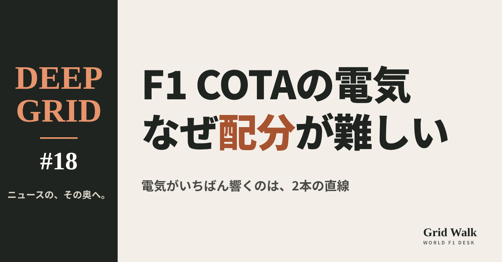

<meta charset="utf-8"><title>COTAの電気 note貼り付け</title>
<style>
/* one column of numbered paste steps; text steps vs image steps differ by marker */
:root{--bg:#F5F4F0;--card:#FFFFFF;--ink:#1D2321;--mute:#5F665F;--line:#DCDAD2;--btn:#1F5FBF;--btnok:#2E8B4F;--img:#E9F3EC;--imgink:#22663B;--sans:'IBM Plex Sans JP','Hiragino Sans','Noto Sans JP',sans-serif}
@media (prefers-color-scheme:dark){:root:not([data-theme="light"]){--bg:#171A19;--card:#202423;--ink:#ECEDE8;--mute:#A3AAA2;--line:#343937;--btn:#4D8BE6;--btnok:#3FA866;--img:#1E2C23;--imgink:#8FD3A6;color-scheme:dark}}
:root[data-theme="dark"]{--bg:#171A19;--card:#202423;--ink:#ECEDE8;--mute:#A3AAA2;--line:#343937;--btn:#4D8BE6;--btnok:#3FA866;--img:#1E2C23;--imgink:#8FD3A6;color-scheme:dark}
body{background:var(--bg);color:var(--ink);font-family:var(--sans);font-size:15px;line-height:1.75;padding:20px 16px 60px}
main{max-width:680px;margin:0 auto;display:grid;gap:28px}
header h1{font-size:22px;margin:0 0 6px;text-wrap:balance}
header p{margin:0;color:var(--mute);font-size:14px}
nav{display:flex;gap:8px;flex-wrap:wrap;margin-top:12px}
nav a{border:1px solid var(--line);border-radius:999px;padding:4px 14px;color:var(--ink);text-decoration:none;font-size:14px;background:var(--card)}
.part h2{font-size:18px;line-height:1.5;margin:0 0 12px;text-wrap:balance;display:flex;gap:10px;align-items:baseline;flex-wrap:wrap}
.tag{font-size:13px;background:var(--ink);color:var(--bg);border-radius:6px;padding:1px 9px}
.steps{list-style:none;margin:0;padding:0;display:grid;gap:12px}
.st{background:var(--card);border:1px solid var(--line);border-radius:12px;padding:12px;min-width:0}
.hd{display:flex;align-items:center;gap:8px;margin-bottom:8px}
.no{width:26px;height:26px;border-radius:50%;background:var(--btn);color:#fff;display:inline-flex;align-items:center;justify-content:center;font-size:13px;font-weight:700;flex:0 0 26px}
.im .no{background:var(--btnok)}
.hd em{font-style:normal;font-size:12px;background:var(--img);color:var(--imgink);border-radius:6px;padding:0 8px}
.bx{font-size:13.5px;line-height:1.7;border:1px solid var(--line);border-radius:8px;padding:8px 10px;max-height:110px;overflow:auto;overflow-wrap:anywhere}
.bx.tall{max-height:150px}.bx p{margin:0 0 6px}.bx h2{font-size:14px;margin:8px 0 4px}.bx a{color:var(--btn)}
.st img{display:block;width:100%;max-width:100%;border:1px solid var(--line);border-radius:8px}
.sub{font-size:12.5px;color:var(--mute);margin:6px 0 0}
.cp{width:100%;margin-top:8px;padding:12px;border:0;border-radius:10px;background:var(--btn);color:#fff;font:600 15px var(--sans);cursor:pointer}
.cp.ok{background:var(--btnok)}.cp.dl{background:var(--btnok)}.cp:focus-visible{outline:3px solid var(--ink);outline-offset:2px}
.xh{font-size:15px;margin:20px 0 10px}
.fb{font-size:13px;line-height:1.7;margin:8px 0 0;padding:8px 10px;border-radius:8px;background:var(--img);color:var(--imgink)}
.opts{display:grid;grid-template-columns:repeat(auto-fill,minmax(240px,1fr));gap:10px}
.opt{min-width:0}.opt img{display:block;width:100%;border:1px solid var(--line);border-radius:8px}
.ol{display:flex;align-items:center;gap:8px;margin-top:6px}.ol b{font-size:13px;flex:0 0 auto}.ol .on{font-size:12.5px;color:var(--mute);flex:1;min-width:0}.ol .cp{width:auto;flex:0 0 auto;padding:9px 14px}.ol .cp{margin:0;padding:9px}
.toast{font-size:13px;color:var(--mute);margin-top:6px}
</style>
<main><header><h1>COTAの電気 note貼り付け</h1><p>上から順に進めてください。青い番号は文章、緑の番号は画像です。</p></header><section class="part"><h2><span class="tag">DEEP GRID</span>アメリカGPのCOTAでは、なぜ電気のやりくりが難しいのか</h2><ol class="steps"><li class="st im"><div class="hd"><span class="no">1</span><b>見出し画像</b><em>画像</em></div><div class="opts"><div class="opt"><div class="ol"><b>E1</b><span class="on">紙の色「なぜ配分が難しい」（サイトのカード画像と同じ）</span><button class="cp dl" data-img="img/eye-E1.png" data-name="COTAの電気_見出し画像_E1.png">ダウンロード</button></div></div></div></li>
<li class="st"><div class="hd"><span class="no">2</span><b>タイトル</b></div><div class="bx" id="t0">アメリカGPのCOTAでは、なぜ電気のやりくりが難しいのか【DEEP GRID #18】</div><button class="cp" data-plain="t0">タイトルをコピー</button></li>
<li class="st"><div class="hd"><span class="no">3</span><b>本文</b></div><div class="bx tall" id="r0"><p>アメリカGPの舞台サーキット・オブ・ジ・アメリカズ（COTA）には、スタート直後の急な上り坂、高速のS字コーナー、約1kmのバックストレートが1周に詰まっている。ところがウィリアムズは、COTAでのエネルギーの使い方と敏感さを「今季の平均の範囲」と見ている。電気の量が足りないコースではないのに、なぜ配分が難しいのか。走り出す前に分かっていることと、まだ分からないことを分けて読む。</p><p>全文と表は F1 Grid Walk で → <a href="https://f1gridwalk.github.io/deep/cota-energy/?utm_source=note&amp;utm_campaign=cota-energy">https://f1gridwalk.github.io/deep/cota-energy/?utm_source=note&amp;utm_campaign=cota-energy</a></p><h2>先に結論</h2><p>① COTAは1周5.513kmで、コーナーは20。スタート直後に約40m上る1コーナー、高速のS字、約1kmのバックストレートが1周に詰まっている（ホンダ、メルセデス）。2026年の車は力の半分近くを電気に頼るが、1周でためられる電気には上限がある。どこで使うかの配分が、速さを分ける。</p><p>② ただし、COTAは電気が足りなくなる極端なコースではない。ウィリアムズのチーフ・トラックサイドエンジニア、ポール・ウィリアムズは「エネルギーの使い方と、エネルギーへの敏感さは、今季の平均の範囲」と話す。電気がいちばん効くのは、1コーナーと12コーナーへの2本の直線だという。</p><p>③ もう一つの山場は、4〜8コーナーの高速の連続だ。ウィリアムズは鈴鹿の第1セクターに似ていると言い、ドライバーのペダルの踏み方を誤ると、電気を大きく使ってしまい、その周の残りで電気の出方が悪くなると話している。</p><p>④ バックストレートでは、遅い11コーナーの出口で電気を多く使えば速く加速できる。ただし使いすぎると、直線の後半で加速が鈍る（クリッピング）。オランダのGPblogは、11コーナーのあとに思い切り使うのが「自動的にいちばん速いわけではない」と書いている。</p><p>⑤ COTAで1周にためてよい電気の量の上限は、FIAがレースごとにチームへ配る文書で決まる。アメリカGPの分は、この原稿の時点ではFIAのサイトで確かめられなかった。どの車が電気に困るのかは、10月23日（現地）からの走行で見えてくる。</p><p><strong>あなたは、COTAの直線で電気を残すなら、1コーナーと12コーナーのどちらだと思いますか？</strong></p><h2>続きは F1 Grid Walk で</h2><p>ここから先の「COTAの1周は、どんな形をしているのか」「チームは「平均的」と見ている」「2本の直線と、S字の「電気の食い方」」「オーバーテイクモードと、まだ分からないこと」は、サイトで読めます。COTAのコースの数字、2026年の電気の決まり、ブレーキの多い場所などの表も載せています。</p><p><strong>DEEP GRID #18「アメリカGPのCOTAでは、なぜ電気のやりくりが難しいのか」</strong></p><p><a href="https://f1gridwalk.github.io/deep/cota-energy/">https://f1gridwalk.github.io/deep/cota-energy/</a></p><p>━━━━━━━━━━</p><p><strong>F1 Grid Walk では、世界のF1ニュースを毎日日本語でまとめています。</strong></p><p>海外の記事の要約を、毎日載せています。</p><p>ほかの海外記事も読みたい方は、F1 Grid Walkへ。</p><p><a href="https://f1gridwalk.github.io/">https://f1gridwalk.github.io/</a></p><p>━━━━━━━━━━</p><p><a href="https://www.pitpass.com/83860/United-States-Grand-Prix-Preview-Williams">出典：Pitpass</a></p><p><a href="https://www.gpblog.com/en/analysis/verstappen-simulation-in-austin-produces-surprising-picture-for-red-bull">出典：GPblog</a></p><p><a href="https://www.formula1.com/en/latest/article/the-risk-perspective-how-f1-drivers-engineers-and-strategists-tackle-the-circuit-of-the-americas.741JHFwQ3tVxbddx0ndKXz">出典：F1公式サイト</a></p><p><a href="https://www.formula1.com/en/latest/article/what-tyres-will-the-teams-and-drivers-have-for-the-2026-united-states-grand-prix.44LKddYSbUJK1LxMAa6VLI">出典：F1公式サイト</a></p><p><a href="https://www.formula1.com/en/latest/article/2026-regulations-explained-all-you-necessitate-to-know-about-f1s-new-power-units.14jfv7a36905uDJDdNyfQd">出典：F1公式サイト</a></p><p><a href="https://www.f1technical.net/news/28443">出典：F1Technical</a></p><p><a href="https://www.fia.com/system/files/decision-document/2026_singapore_grand_prix_-_power_unit_information.pdf">出典：FIA</a></p><p><a href="https://global.honda/jp/F1/circuit/circuit-of-the-americas/">出典：ホンダ</a></p><p><a href="https://circuitoftheamericas.com/blog/2023/9/29/cota-crash-course/">出典：COTA</a></p><p><a href="https://www.mercedesamgf1.com/news/six-things-you-didnt-know-about-the-us-gp-2026">出典：メルセデス</a></p><p><a href="https://www.audif1.com/en/races/2026/united-states-grand-prix">出典：アウディ</a></p><p><a href="https://www.mclaren.com/racing/formula-1/2026/united-states-grand-prix/">出典：マクラーレン</a></p><p><a href="https://haasf1team.com/news/united-states-grand-prix-race-preview-1">出典：ハース</a></p><p><a href="https://www.gpblog.com/nl/nieuws/mclaren-licht-nieuwe-updates-toe-om-achterstand-op-red-bull-te-verkleinen">出典：GPblog（オランダ）</a></p><p><a href="https://thebrakereport.com/brembo-sees-moderate-brake-needs-for-weekends-gp-races/">出典：The Brake Report</a></p></div><button class="cp" data-rich="r0">本文をコピー</button></li>
<li class="st"><div class="hd"><span class="no">4</span><b>ハッシュタグ</b></div><div class="bx" id="g">#F1 #F1jp #DEEPGRID #アメリカGP #COTA #パワーユニット #F1解説 #フォーミュラ1 #モータースポーツ #F1ニュース #海外F1 #F1好きと繋がりたい #F1GridWalk</div><button class="cp" data-plain="g">ハッシュタグをコピー</button></li>
</ol><h3 class="xh">X に投稿（note を公開したあと）</h3><ol class="steps"><li class="st"><div class="hd"><b>① note からシェアするときに添える文</b></div><div class="bx" id="x0">COTAで使える電気の量は今季の平均くらい。それでも難しいのは、どこで使うかの配分。1コーナーと12コーナーへの直線、鈴鹿に似たS字。アメリカGPの電気のやりくりを、走る前にnoteにまとめました #F1jp #DEEPGRID</div><button class="cp" data-plain="x0">コピー</button></li>
<li class="st"><div class="hd"><b>② ①への返信</b></div><div class="bx" id="x1">ほかの海外記事も読みたい方は、F1 Grid Walkへ。
https://f1gridwalk.github.io/deep/cota-energy/?utm_source=x&amp;utm_campaign=cota-energy</div><button class="cp" data-plain="x1">コピー</button></li>
<li class="st"><div class="hd"><b>③ ②への返信</b></div><div class="bx" id="x2">毎日の海外F1ニュースは、日本語でこちらにまとめています。
https://f1gridwalk.github.io/</div><button class="cp" data-plain="x2">コピー</button></li>
</ol></section></main><script>
function done(b,msg){const t=b.dataset.t||b.textContent;b.dataset.t=t;b.classList.add('ok');b.textContent=msg||'コピーしました';setTimeout(()=>{b.classList.remove('ok');b.textContent=t},2000)}
function selectEl(el){const r=document.createRange();r.selectNodeContents(el);const s=getSelection();s.removeAllRanges();s.addRange(r)}
async function rich(el,b){
  try{await navigator.clipboard.write([new ClipboardItem({'text/html':new Blob([el.innerHTML],{type:'text/html'}),'text/plain':new Blob([el.innerText],{type:'text/plain'})})]);done(b);return}catch(e){}
  selectEl(el);let ok=false;try{ok=document.execCommand('copy')}catch(e){}
  if(ok){getSelection().removeAllRanges();done(b)}else{done(b,'選択しました。コピーしてください')}}
async function plain(el,b){
  try{await navigator.clipboard.writeText(el.innerText);done(b);return}catch(e){}
  selectEl(el);let ok=false;try{ok=document.execCommand('copy')}catch(e){}
  if(ok){getSelection().removeAllRanges();done(b)}else{done(b,'選択しました。コピーしてください')}}
let dlns=null;(async()=>{try{dlns=await window.claude?.use?.("downloads")}catch(e){dlns=null}})();
async function img(src,b){
  b.dataset.t=b.dataset.t||b.textContent;
  if(!dlns){try{dlns=await window.claude?.use?.("downloads")}catch(e){}}
  if(!dlns){b.textContent='ダウンロードできませんでした';setTimeout(()=>{b.textContent=b.dataset.t},3500);return}
  try{const blob=await fetch(src).then(r=>r.blob());b.textContent='保存の確認を開いています…';
    await dlns.save({filename:b.dataset.name,data:blob});done(b,'ダウンロードしました')}
  catch(e){const c=e&&e.code;b.textContent=c==='declined'?'キャンセルしました':c==='rate_limited'?'少し待ってからもう一度押してください':'ダウンロードできませんでした';setTimeout(()=>{b.textContent=b.dataset.t},3500)}}
document.querySelectorAll('.cp').forEach(b=>b.addEventListener('click',()=>{
  if(b.dataset.rich)rich(document.getElementById(b.dataset.rich),b);
  else if(b.dataset.plain)plain(document.getElementById(b.dataset.plain),b);
  else img(b.dataset.img,b)}));
</script>